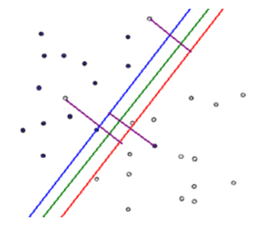
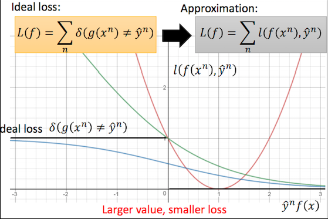
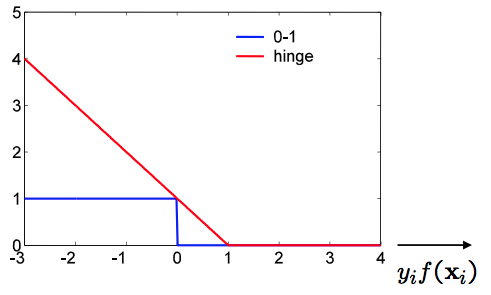

About Me
Intro:
I am Junyang (Justin) Lin, a graduate student in Institute of Linguistics and Applied Linguistics, School of Foreign Languages, Peking University. Since Nov. 2017, I have been working in the Language Computing and Machine Learning Group (LANCO), Key Laboratory of Computational Linguistics, supervised by Xu Sun and Qi Su. I have been studying Computational Linguistics for over a year and my major research focus is Deep Learning for Natural Language Processing, typically Neural Machine Translation and Abstractive Summarization.
Research Interests:
Neural Machine Translation, Abstractive Summarization, Natural Language Generation
Education:
Master of Linguistics and Applied Linguistics, Peking University
Bachelor of English Literature and Culture, University of International Relations
Internship:
Language Computing and Machine Learning Group, Key Laboratory of Computational Linguistics, Peking University; Research Intern; Nov. 2017 till now
Recent News:
May 16, 2018. One paper (first author) was accepted by COLING 2018.
Apr. 21, 2018. Three papers (1 as first author and 2 as co-author) were accepted in the ACL 2018
Apr. 17, 2018. One paper (co-author) is accepted in the IJCAI.
Feb. 6, 2018. Preprint "Decoding-History-Based Adaptive Control of Attention for Neural Machine Translation" (first author) was available on the arXiv
Feb. 5, 2018. Preprint "DP-GAN: Diversity-Promoting Generative Adversarial Network for Generating Informative and Diversified Text" (co-author) was available on the arXiv
Academics

Publications:
Deconvolution-Based Global Decoding for Neural Machine Translation
Junyang Lin, Xu Sun, Xuancheng Ren, Shuming Ma, Jinsong Su and Qi Su
To appear in COLING 2018
Global Encoding for Abstractive Summarization [pdf]
Junyang Lin, Xu Sun, Shuming Ma and Qi Su
To appear in ACL 2018
Autoencoder as Assistant Supervisor: Improving Text Representation for Chinese Social Media Text Summarization
Shuming Ma, Xu Sun, Junyang Lin and Houfeng Wang
To appear in ACL 2018
Bag-of-Words as Target for Neural Machine Translation
Shuming Ma, Xu Sun, Yizhong Wang and Junyang Lin
To appear in ACL 2018
A Hierarchical End-to-End Model for Jointly Improving Text Summarization and Sentiment Classification [pdf]
Shuming Ma, Xu Sun, Junyang Lin and Xuancheng Ren
To appear in IJCAI 2018
Decoding-History-Based Adaptive Control of Attention for Neural Machine Translation [pdf]
Junyang Lin, Shuming Ma, Qi Su and Xu Sun
arXiv
DP-GAN: Diversity-Promoting Generative Adversarial Network for Generating Informative and Diversified Text [pdf]
Jingjing Xu, Xu Sun, Xuancheng Ren, Junyang Lin, Bingzhen Wei and Wei Li
arXiv
Technical Reports:
Learn the Dependencies Between Content Words and Function Words [pdf]
Junyang Lin
Academic Activities:
Reviewer for ACL 2018, IJCAI 2018, NAACL 2018, EMNLP 2017, CLSW 2017.
Reviewer for TALLIP.
Blog
Introduction to Deep Learning (PPT).
Another Perspective to View SVM (2).
Another Perspective to View SVM (1).
Another Perspective to View SVM (1)
This is what I can never forget. Nine months ago, my mentor said to me:"Hey, how about building a paraphrasing system for your final project? Well try to do some feature engineering, label your data, and use SVM?" Ooh, maan, I can only write no more than ten lines of code at that time and you told me to build a system with a Support Vector Machine?! Is it a machine that I can afford? Er mar gerd... Back to our topic, since then, I have had a special feeling for SVM and I have always been curious about such black magic. In the following content, I am going to focus on the loss function of SVM and it involves some knowledge about square error and cross entropy.
Support Vector Machine has nothing to do with a real machine. It is just a great machine learning algorithm which often has excellent performance in binary classification. Training a SVM model helps us find the best hyperplane (just like a plane in the high dimensional space) to separate the data and classify them to the right categories. Its main difference from perceptron is that it not only separates the data but also maximizes the margin. Here I do not want to discuss about details about functional margin and geometric margin. I try to illustrate it in a more intuitive way. Say, you have a bunch of data, like ten thousand documents with five thousand of positive attitude and another five thousand of negative attitude, and you want to train a model that can classify them. The procedure is relatively simple: you just need to turn the documents into feature vectors with labels, $+1$ for positive and $-1$ for negative. Suppose the data are linear separable, there should be a hyperplane that can best separate them with largest margin. Intuitively, on either side, there should be some vectors that are nearest to the hyperplane, which are support vectors. These vectors are on two hyperplanes that are parallel to the best hyperplane, $H_1$ and $H_2$, and the distance between $H_1$ and $H_2$ is margin. This is not difficult, but the problem is, how can we find such hyperplane? If you find some books to read, you will see a lot about convex quadratic programming using Lagrange function, which is really puzzling. However, I learned a lot from Hung-yi Lee, a professor in NTU, that training SVM can be viewed from another perspective, which I think is much simpler. If you know something about Pegasos, the fact that SVM can be trained with gradient descent may seem obvious to you. In the following parts, I am going to discuss about this issue.

Let's define the functions for linear separable SVM first. We have a bunch of feature vectors \(\mathcal{X} = \{x^{(1)}, x^{(2)}, ..., x^{(n)}\}\), corresponding to the label space \(\mathcal{Y} = \{+1, -1\}\), and now we use an affine function \(f(x) = w^{T}x + b\) to model the data points, and our task is to find the best hyperplane \(w^{*T}x + b^{*} = 0\) to separate them. For a certain data point $x^{(i)}$, if it is correctly classified, \(y^{(i)}f(x^{(i)}) > 0\). This is simple, but adding margin maximization problem to it makes it much more complicated. Instead of discussing about the functional and geometrical margin as well as convex quadratic programming, I would like to talk about the choice of loss function for a linear classifier.

(From Hung-yi Lee's PPT in the Lecture 20 of Machine Learning)
As is shown in the picture, the x axis represents $y^{(n)}f(x^{(n)})$, while the y axis represents the loss. In fact we have an ideal loss, which is \(l(g(x^{(n)}), y^{(n)}) = \delta(g(x^{(n)}) \neq y^{(n)})\), where \(g(x^{(n)}) = sign(f(x^{(n)}))\). However, it is problematic in application since it is totally not differentiable. Therefore, we need to find some alternatives, including L2 loss, sigmoid square loss, cross entropy loss and hinge loss. First of all, it is impossible to train a linear classifier with L2 loss function (\(l(f(x^{(n)}), y^{(n)}) = (y^{(n)}f(x^{(n)})-1)^2\), see the red curve). We hope that the target $y^{(n)}$ and the output $f(x^{(n)})$ are of the same sign, and we also hope that the larger their product is, the smaller the loss is, so using mean square error here is definitely inapproapriate. Second of all, sigmoid square loss is also not a good choice (\(l(f(x^{(n)}), y^{(n)}) = (\sigma(y^{(n)}f(x^{(n)}))-1)^2\)). If you have ever experienced the problem of vanishing gradient in your training of neural network, you can find that the problem here is similar. If the value $y^{(n)}f(x^{(n)})$ is a large negative number, its derivative is close to $0$, which means the gradient is too small for the loss to move downward. So how about cross entropy loss? I think it is a reasonable choice and its performance may be satisfactory. The loss function is \(l(f(x^{(n)}), y^{(n)}) = log(1 + exp(-y^{(n)}f(x^{(n)}))\). It seems great since it is the upper bound of the ideal loss and it is consistent with the rule "the larger value, the smaller loss". Moreover, when the $y^{(n)}f(x^{(n)})$ is negative, it has large gradient, which encourages the loss to move downward. However, is there even a better loss function? We may find that the problem of this function is that it encourages the value to be as large as possible, but in fact, if the value is larger than a certain number, our requirements are all satisfied and there is no need for it to be even larger. It may be not robust enough and may be influenced by the outliers.

(From Andrew Zisserman's PPT in the Lecture 2 of Machine Learning)
This function is pretty simple: $$l(f(x^{(n)}), y^{(n)}) = max(0, 1 - y^{(n)}f(x^{(n)}))$$ It means that when the value is negative, the loss is large and it encourages the value to become positive. Moreover, being positive is not enough and it should be larger than a certain value, here we set the value $1$. When the value is larger than 1, there is no need to decrease the loss because we now have enough confidence that we have correctly classified the data points, which solves the problem mentioned above. The value $1$ is actually our margin. You can try to prove it from the perspective of functional margin and geometrical margin. Now there is a problem about the value of the margin. The reason why it should be $1$ is that it makes the loss function a tight, or in another word, lowest upper bound of the ideal loss.
Now that the problem becomes clear, we can build the final loss function for linear SVM: $$L(f) = \sum_{i=1}^{n}l(f(x^{(i)}), y^{(i)}) + \frac{\lambda}{2}||w||_2^2$$ Well, is it similar to the optimization problem that you are familiar with? $$min\frac{1}{2}||w||_2^2 + C\sum_{i=1}^{n}\xi^{(i)}$$ $$subject \; to \; y^{(i)}f(x^{(i)}) \geq 1 - \xi^{(i)}$$ Here the $\xi^{(i)}$ is our slack variable, which is also our hinge loss function. Wow, it is just like magic!
I have to admit that the first time I learned these ideas I jumped off my chair excitedly. Even today I still feel that this perspective is really great for beginners to understand linear SVM. I hope I can share the happiness to you guys. Next time I will try to discuss about kernel tricks in SVM, starting from gradient descent of SVM.
Another Perspective to View SVM (2)
In this part, I am going to prove that $w$ is the linear combination of the inputs $x$. In the last passage, I discussed about the loss function of SVM and showed that it can be trained with gradient descent. Here I would like to present the training steps by calculating the gradients.
The hinge loss function of SVM is: $$l(f(x^{(n)}), \hat{y}^{(n)})=max(0, 1 - \hat{y}^{(n)}f(x^{(n)}))$$ The derivative of $l(f(x^{(n)}), \hat{y}^{(n)})$ to $w_i$ can be calculated below: $$\frac{\partial{l}}{\partial{w_i}}=\frac{\partial{l}}{\partial{f}}\frac{\partial{f}}{\partial{w_i}}=\begin{cases} -\hat{y}^{(n)}x^{(n)}_i& 1-\hat{y}^{(n)}f(x^{(n)}) > 0 \\ 0& 1-\hat{y}^{(n)}f(x^{(n)}) \le 0 \end{cases}$$ so the gradient of $w_i$ is: $$\nabla{w_i}=\frac{\partial{L}}{\partial{w_i}}=\sum_{n}-\delta(\hat{y}^{(n)}f(x^{(n)})<1)\hat{y}^{(n)}x^{(n)}_{i}$$ and the gradient of the weight vector is: $$\nabla{w}=\frac{\partial{L}}{\partial{w}}=\sum_{n}-\delta(\hat{y}^{(n)}f(x^{(n)})<1)\hat{y}^{(n)}x^{(n)}$$ In the optimization procedure, the weight vector $w$ is optimized in each step in the following way: $$w=w-\eta\nabla{w}$$ If the weight vector reaches its global minimum in $m$ steps, which means the optimal $w^{*}$ is obtained, \nabla{w}=0. Therefore, if $w$ is initialized as $0$, $w^{*}$ can be presented as follows: $$w^{*}=m\cdot(-\eta\nabla{w})=\sum_{n}m\eta\delta(\hat{y}^{(n)}f(x^{(n)})<1)\hat{y}^{(n)}x^{(n)}$$ Now I define a term called $\alpha_{n}$, that: $$\alpha_{n}=m\eta\delta(\hat{y}^{(n)}f(x^{(n)})<1)$$ Then $w^{*}$ can be written as below: $$w^{*}=\sum_{n}\alpha_{n}\hat{y}^{(n)}x^{(n)}$$ This equation is the same of $w^{*}$ in the Lagrange function for solving the dual problem of SVM, and it proves that $w$ is a linear combination of the data points $x$. Here the equation can be further simplified to: $$w=\sum_{n}\alpha_{n}^{*}x^{(n)}=X\alpha^{*}$$ It should be noted that because of $\delta$ in $\alpha^{*}$, the vector $\alpha^{*}$ is sparse. The vectors $x^{(n)}$ with non-zero $\alpha_{n}^{*}$ are the support vectors holding the margin.
Back to the affine function $f(x)=w^{T}x$, now it can be changed to: $$f(x)=\alpha^{T}X^{T}x=\sum_{n}\alpha_{n}(x_{n}\cdot{x})$$ Here I define a function called K that: $$K(x_{n}, x)=\sum_{n}x_{n}\cdot{x}$$ so: $$f(x)=\sum_{n}\alpha_{n}K(x_{n}\cdot{x})$$ Function K is called kernel function (here this K function is linear kernel function), which projects the input data from the input space to the feature space, usually of higher dimensions. The calculation of $K(x, z)$ is much simpler than projection function $\phi(x)$. Moreover, the power of kernel function is more than simple calculation. It is able to project the inputs from the inputs space to the space of infinite dimensions. One typical example is the well-known RBF function.
In the next passage, I am going to introduce the traditional method to solve the primal problem of SVM, and try my best to interpret Lagrange multiplier, which has puzzled me for a long time, compared with L2 regularization.
Intro to Deep Learning (PPT)
The following link is my PPT for a lecture in the course Computational Linguistics at our institute, which is a simple introduction to deep learning. If you are interested, please click here!
CV
To be updated.
Contact
Email: linjunyang@pku.edu.cn
Address: No.5 Yiheyuan Rd., Haidian District, Beijing, China
Elements
Text
This is bold and this is strong. This is italic and this is emphasized.
This is superscript text and this is subscript text.
This is underlined and this is code: for (;;) { ... }. Finally, this is a link.
Heading Level 2
Heading Level 3
Heading Level 4
Heading Level 5
Heading Level 6
Blockquote
a a
Preformatted
i = 0;
while (!deck.isInOrder()) {
print 'Iteration ' + i;
deck.shuffle();
i++;
}
print 'It took ' + i + ' iterations to sort the deck.';
Lists
Unordered
- Dolor pulvinar etiam.
- Sagittis adipiscing.
- Felis enim feugiat.
Alternate
- Dolor pulvinar etiam.
- Sagittis adipiscing.
- Felis enim feugiat.
Ordered
- Dolor pulvinar etiam.
- Etiam vel felis viverra.
- Felis enim feugiat.
- Dolor pulvinar etiam.
- Etiam vel felis lorem.
- Felis enim et feugiat.
Icons
Actions
Table
Default
| Name |
Description |
Price |
| Item One |
Ante turpis integer aliquet porttitor. |
29.99 |
| Item Two |
Vis ac commodo adipiscing arcu aliquet. |
19.99 |
| Item Three |
Morbi faucibus arcu accumsan lorem. |
29.99 |
| Item Four |
Vitae integer tempus condimentum. |
19.99 |
| Item Five |
Ante turpis integer aliquet porttitor. |
29.99 |
|
100.00 |
Alternate
| Name |
Description |
Price |
| Item One |
Ante turpis integer aliquet porttitor. |
29.99 |
| Item Two |
Vis ac commodo adipiscing arcu aliquet. |
19.99 |
| Item Three |
Morbi faucibus arcu accumsan lorem. |
29.99 |
| Item Four |
Vitae integer tempus condimentum. |
19.99 |
| Item Five |
Ante turpis integer aliquet porttitor. |
29.99 |
|
100.00 |